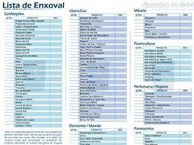

Confecções em geral, do enxoval completo à moda infantojuvenil.
O Atacadão do Bebê é uma empresa que vêm atuando há mais de 15 anos no mercado e está consolidada no segmento infantil e juvenil em Recife – PE.
ContatoElaboramos uma lista simplificada de sugestão para enxoval. Para as mamães que buscam as necessidades e não querem deixar nada de fora.
Logo abaixo, uma lista de enxoval completa disponível para download.
Localizada no bairro de São José, centro do Recife, o Atacadão do Bebê tem seu trabalho voltado para seguimentos como enxoval, trabalhando com todo o suporte para o bebê e para a mamãe; confecções de 0 a 12 anos, sociais e esportivas, incluindo berços e etc; e áreas como puericultura, farmácia e higiene.
O Atacadão do Bebê é uma empresa que vêm atuando há mais de 15 anos e está consolidada no mercado infantil e juvenil em Recife – PE. Em nosso site você encontrará nosso Endereço e informações de como chegar até nossa empresa e uma lista de enxoval em dois formatos; resumida, para compras necessárias; e uma completa, que comtempla de enxoval à móveis.
Aguardamos sua visita!
Rua Antônio Henrique, 40
São José
Recife/PE